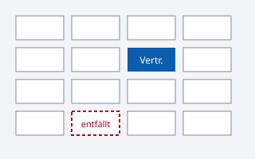

Links und Bilder
Links
Weiter zu den Listen-Beispielen.
Nachschlagen bei MDN Web Docs (HTML).
W3C-Validator (öffnet in neuem Tab)
Direkt zu den Bildern springen
Fragen an das Sekretariat oder telefonisch: 0221 000 000 0
Vertretungsformular herunterladen (PDF, 120 KB)
Bilder

Download
(Hier stünde im echten Projekt der Download-Link.)